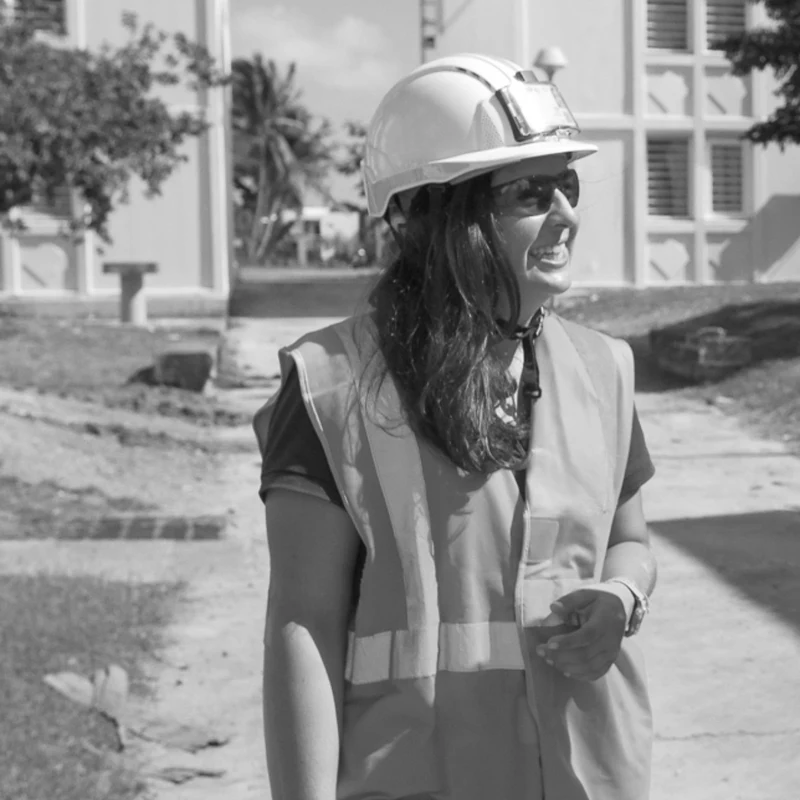

Fanny Prieto, fondatrice de La Clef de Voûte
Avant de créer La Clef de Voûte, j'ai piloté pendant plusieurs années des projets de construction et de réhabilitation exigeants, pour des maîtres d'ouvrage publics et privés. Une expérience que je mets aujourd'hui au service de projets de toutes tailles, dans le Loiret, l'Yonne et la Seine-et-Marne.

Des projets qui n'autorisent pas l'approximation
Sous-préfecture, logements sociaux, équipements sportifs, établissements de santé, établissements pénitentiaires... Ces opérations m'ont appris une chose : sur un projet de bâtiment public ou privé, chaque détail technique, chaque délai et chaque euro compte. C'est cette exigence que j'apporte aujourd'hui à chacun de mes clients, quelle que soit la taille du projet.
Rénovation de la Sous-Préfecture de Pointe-à-Pitre
Pilotage d'un projet institutionnel sensible, exigeant une coordination fine entre les services de l'État, la maîtrise d'œuvre et les entreprises.
Réhabilitation de 261 logements sociaux
Suivi technique et financier d'une opération de grande ampleur, occupée pendant les travaux — avec les contraintes de phasage et de relogement que cela implique.
Gymnases et piscines
Accompagnement de collectivités sur des équipements sportifs techniques, soumis à des normes spécifiques (accessibilité, sécurité, réglementation ERP).
Établissements de santé
Suivi de projets en milieu hospitalier, nécessitant une vigilance renforcée sur la continuité d'activité et les contraintes techniques du secteur.
Établissements pénitentiaires et de justice
Participation à des opérations à haute sensibilité technique et sécuritaire, où la rigueur de suivi de chantier est absolue.
L'élément qui tient tout l'édifice
La clef de voûte, c'est cette pierre centrale qui verrouille l'ensemble d'une voûte et rend l'édifice stable. C'est exactement le rôle que je joue sur vos projets : un point d'appui central et fiable, qui tient l'ensemble des enjeux techniques, financiers et humains d'un projet de construction.
Un nom qui dit aussi, très concrètement, mon métier : je viens du bâtiment, et c'est ce regard technique de terrain que j'apporte à chaque projet.
« Collectivités, entreprises, particuliers — un expert technique à vos côtés, de la première idée à la remise des clés. »
Fanny PrietoEnvie d'échanger sur votre projet ?
Je vous réponds rapidement pour un premier échange, sans engagement.